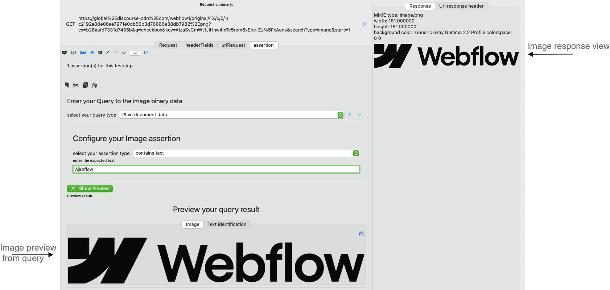

Application Overview
When you open APIJockey TEST you will see this layout:
View Variables
The Variables view consists actually of four views that allow to manage variables on different test definition elements.
- Repository
- Testset
- Testcase
- Teststep
The status of the variables views and their visibility depends - of course - of your current selection.
Base Variable View
The Variable views have all the same structure they just differ in the variable type and their parent type.
The Variables parent selector tabs depend on your current selection. In the above screenshot, there are four tabs visible (repository, testset, testcase and teststep). You can deselect a repostory without losing the selection of the underlying testset. The name below the variables parent selector tabs is the name of parent element you have selected with your tabs, in this case the teststep Enumerate, as you can see on the right.
Commands
- Show/hide variables toggles the variables list. This may be helpful to have more space when editing testsets and repositories
- Export all variables will prompt for a directory and creates a properties file (key/value, separated by
=
) for all visible variable parents - Import variables will prompt for a properties file (see above) contents and read the values as String variables
- Export variables will prompt for file name and location and creates a properties file (see above)
- Create new variable opens the variables editor as described above
- Delete selected variables deletes these variables.
- Edit a selected variable allows you to change the variable type, the name and the value
- Documentation of the Pasteboard commands
Variables editor
As described in Concepts, variables represent various value types and can be formatted in many ways. This paragraph walks through the variable editor options
Variable types
String Variables
Enter arbitrary-length Text. No formatting occurs.
Password Variables Editor
Enter arbitrary-length Text. No formatting occurs. The variable list will not show the variable value. The varaible value will not be shown with the toggle on off
(storage/Variables-Editor-passwordvalue-undisclosed.png) ![Variables editor password value undisclosed] To see the actual password value, set the toggle to on (storage/Variables-Editor-passwordvalue-disclosed.png) ![Variables editor password value disclosed]
Fixed Date Variables Editor
The fixed/static date variables editor uses the builtin date picker to select a date and a time. The editor defaults the formatting to yyyy-mm-dd, but you can apply any supported formatting like yyyy-mm-dd'T'HH:mm:ss
Relative Date Variables Editor
The relative date variables editor uses the builtin date/time picker to select a date, and if required a time. The editor defaults the formatting to yyyy-mm-dd, but you can apply any supported formatting like yyyy-mm-dd'T'HH:mm:ss. The reevaluation occurs whenever the variables value is accessed, so even in the variables list, this value is reevaluted when the list view updates.
Number Variables Editor
Number formatting is another frequent requirement as SOAP Webservices expect an identifiable number formatting and schema are pretty strict with the provided formatting. In general they expect simple numbers though.
Boolean Variables Editor
The Editor supports two options
- true/false
- yes/no
Run environment Variables
As described in [View Run Environment]{#viewrunenvironment} you can configure authentication for a Webservice in a Run Environment Configuration. Data that is configured here, will be accessed, when the user selects the corresponding Run Environment. When you want to access these information within your request, you can provide these values through Run Environment Variables, as described here:
| Authentication type | Textfield name | Variable notation in Test definition |
|---|---|---|
| HTTP basic Authentication | HTTP username | $(EnvironmentConfig.httpUsername) |
| HTTP basic Authentication | HTTP password | $(EnvironmentConfig.httpPassword) |
| HTTP bearer Authentication | HTTP bearer token | $(EnvironmentConfig.bearerToken) |
| None (No HTTP authentication) | Payload username | $(EnvironmentConfig.payloadUsername) |
| None (No HTTP authentication) | Payload username | $(EnvironmentConfig.payloadPassword) |
| None (No HTTP authentication) | Payload OTP | $(EnvironmentConfig.payloadOTP) |
| None (No HTTP authentication) | Payload Token | $(EnvironmentConfig.payloadToken) |
We want to illustrate this specific variable resolution mechanism with the example of a sample request that needs to provide a username, a password, an OTP (fixed) in the Test Run Environment and a Token variable, that is retrieved from another request ) We configure a Service Definition for the local Run Environment with NONE-Authentication which means we will use an Idenity Service and pass over data.

The relevant input is highlighted in blue, you will notice the variable value for the payloadToken information. We will pass the four information in an HTTP request (which could be a SOAP request as well. We have set the Run Environment to localhost. Notice the Repository variable with name token.Our request looks like this:
Now, we switch to the tab resolvedRequest to see what the variables are resolve to:
VariableValueTransfer
A VariableValueTransfer designates a value (random value, manual or CSV-file input XPATH-expression JSONPath-expression) to a variable. It also server to write Variable values to a result table. When you want to use dynamic data in your requests, you will always access variable. The origin of the variable data is abstracted in the access and the VariablesValueTransfer describes this data transfer.
Configure a VariableValueTransfer
When you work with any of these teststeps, you will have to handle the included VariableValueTransfer:
- View RandomizeTeststep
- View RandomizedvaluelistTeststep
- View Manual RandomizedvaluelistTeststep
- View DatatransferTeststep
- Conceptual overview of Databased Testcases
A variable can be referenced, if it is defined within the teststeps' Test definition Hierarchy
- on the teststep
- on the teststep's parent testcase
- on the teststeps's parent testset
- on the teststeps's parent repository
When you create a new value provider, the variable's parent type is defaulted to testcase.
If you want to change this, click with your mouse on the button remove configuration. We will keep the setting as defaulted. Click with your mouse on the button Add Variable. This will open a dialog. Enter the name vin and keep the value as it is. If you switch the tab to something else than String (variable type), this entry will not be visible. Cconfirm with OK You will see a new entry.
Click with your mouse on this list entry. Now, the variable is reference, you shoud see the following view. The random value provider is fully configured. You can run your value provider, now.
Click with your mouse the on the button test run value provider. the updated value appears in the reference the reference variable view
The random value in the screenshot will probably be different from the one you see.. You can reference your variable in the requesteditor as:
$(Testcase.vin)
View Run Environment
this view can be found in the Viewgroup Environment The conceptual overview of working with different environments can be found in Run Environment Find a detailed description of the Run Environment View here
List of Run Environments
- list of environments displays all environments. Environments allow a service related configuration for URLs and authentication information
- new Environment creates a new entry
- delete removes an environment
- rename lets you change the list display name, which also affects the Run Environment picker text in the Viewgroup Testdefinition
- move up the position of the selected entries
- move down the position of the selected entries
- copy an existing entry to create a new entry
Run Environment configurations for a Service Definition
When you select en entry you can configure Run Environment specific settings, either empty
![screenshot Run Environment with empty Service Configuration] (storage/RunEnvironmentEmptyConfiguration.png)
- Add will create a new configuration for the
- selected Run Environment time travel
- on the Service Definition My HTTP Service two
When you click Add you will see a configuration dialog, outlined with screenshot for an existing configuration on another Service Definition:
(storage/RunEnvironmentServiceDefinition.png) ![screenshot Run Environment Service Definition]
This is a screenshot from a Manual HTTP Service Definition Run Environment configuration for an environment time travel. The SOAP definition differs only in the URL input, which is described below.
Settings for Run Environment Service Definitions
- On the top, you see the currently seelcted run environment name
- You enter the host url and the port for a Manual HTTP Service Definition or a complete URL for SOAP Service. We expect non-SOAP Service to use routes and query parameters added to the host url that will not differ between environments but teststep specific, where soap service have just different URLs without route and query parameters
-
Authentication has three options:
-
Basic HTTP Authentication, you provide a username and a password which will be used to create the HTTP Header Authorization Basic. See the example configuration in the screenshot above
- Bearer HTTP Authentication, you provide a token information which will be used to create a HTTP Header Authorization Bearer
- NO HTTP Authentication, you may provide a payload username a payload password, a payload OTP ** and/or a payload token** that may be static or be variable
Resolution process for Run Environment settings
See Run Environment for the conceptual overview. In the case of basic and bearer authentication, APIJockey Test handles adding the Headers for you. It will resolve the information entered in this configuration screenshot. You can access the authentication information in your payload by using variables, in the case you need to authentication against an Identity Service to get authorized for a business service You can use variables in the configuration, if you need to run an authentication call and want to store a token in a repository variable. For convenience, find all EnvironmentConfig Variables here with the notation to use in your Test Definition
| Authentication type | Textfield name | Variable notation in Test definition |
|---|---|---|
| HTTP basic Authentication | HTTP username | $(EnvironmentConfig.httpUsername) |
| HTTP basic Authentication | HTTP password | $(EnvironmentConfig.httpPassword) |
| HTTP bearer Authentication | HTTP bearer token | $(EnvironmentConfig.bearerToken) |
| None (No HTTP authentication) | Payload username | $(EnvironmentConfig.payloadUsername) |
| None (No HTTP authentication) | Payload username | $(EnvironmentConfig.payloadPassword) |
| None (No HTTP authentication) | Payload OTP | $(EnvironmentConfig.payloadOTP) |
| None (No HTTP authentication) | Payload Token | $(EnvironmentConfig.payloadToken) |
SOAP Attachments
The SOAP Request editor provides a tab Attachments to edit, update and delete attachments
Command overview
- Create new attachment adds a new enty in the attachments list. You need to load the actual content later, as in the screenshot.
- Delete removes the selected attachments from the attachments list. The local file disc content is not removed.
- Rename lets you change the name of the selected attachment. The attachment name is not used in the request and helps you organize your attachment list.
- Move Up changes the order of the selected attachment entries. This has not impact on the request
- Move Down changes the order of the selected attachment entries. This has not impact on the request
- Load from disc opens a file open dialog where you can select the file to attach. Select and confirm will load the file contents and insert them to the attachment entry, It will try to recognizes the appropriate MIME type.
- Edit MIME type lets you set your own MIME type that is uses in the request
Create a new attachment
Click with your mouse on the button Create new attachment. This will open a new dialog.
![Dialog new SOAPRequestAttachment] (storage/Dialogs-NewSOAPRequestAttachment.png)
Enter the name (e.g. invoice) and confirm with OK. This will create a new attachment as in the screenshot above. Click with your mouse on the button Load from disc to insert the local file contents. In the screenshot this is an invoice that should be sent with request to test an upload functionality. The content is - if supported - in the content preview
Supported Type
s The builtin attachments preview supports:
- PDF-Documents
- Images
- Text
If the content type is different, no preview is shown, the attachment will still be sent with the request.
Reference attachments
If you want to reference the attachment in the request editor, click with your mouse on the button Copy to Pasteboard. The Pasteboard will contain a string like so:
$(Attachment.CID:8FD11DF7-5DE5-49FD-A6A8-D1C7B1DB6A83@apijockey.com).
You can copy this text in any element like in the screenshot for the element msg:Data
Assertion editors
HTTP assertion editor
An HTTP assertion verifies basic HTTP-URL request specific information. HTTP Assertions are available for both HTTP Teststep and SOAP Teststep.

Assertion value
Currently, there are three different data, that can be assessed:
- Status (HTTP Status)
- Data length (Binary data length)
- Response time (measured in ms)
Assertion test type
The assertion test type depends on the value type being assessed. For HTTP assertions these are integer values, so the assertion test type provides a set of options that make sense for integers.
- is equal to (single expected value)
- is smaller than (single expected value)
- is greater than (single expected value)
- is between ... and ...
- is not between ... and ...
- is in List
Expected value
The expected value depends on the assertion test type and is either:
- single expected value
- a lower range limit and an upper range limit
- a list of values
Run assertion
Run assesses the current response data against the assertion test type, the expected value and the actual value. The actual HTTP values are kept in memory, so you can rerun a test as often as you want and change it.
Image Assertion editor
An Image assertion uses a trained machine learning model to capture the text contents of a file.
Query Type
As a first step, you need to configure, where the image data should be taken from. There are four options:
- JSONPath, enter the JSONPath expression to the binary data in the response that represents the image.
- XPath 1 (with function support), enter the XPath expression to the binary data that represents the image. Note: If you work with MTOM, you will need to select the href attribute which holds the content-ID reference.**
- XQuery / XPath 2 (no function support), enter the XPath expression to the binary data that represents the image.
- Plain Document data, the response is expected to hold binary data that represent the image.
Configure your Image assertion
You have three options to check Text content on an image
- Contains text enter the expected text.
- Contains text (ignore case), enter the expected text.
- Barcode, enter the expected payload
The blue run button together with the result status (green checkmark) validates the assertion and gives you immediate feedback.
Preview
When you run the query (blue run button), APIJockey TEST will try to read the Image data, supported types are TIFF, PNG, JPEG, GIF and PDF. IF this is successful you will see the received image in the preview, together with the assertion run results as in the screenshot below:

Query result
It seems odd that both preview and response view show the same content. This is the case as the response contains the image only. In other cases you might have a JSON Response or a SOAP Response and would apply JSONPath, XQuery or XPath to extract the Base64 encoded data, which would then internally be transformed to binary image data. If this is the case, you will see another tab Query Result that should help you identify, what part of the response document is returned by your query.
Text/Barcode identification
When the assertion run is completed you will see a tab Text identification or Barcode identification depending on your Assertion type. This tab holds a list of Texts / Barcode payload found during the AI-scan together with a confidence vote. This can help you decide, if you want to run the assertion automatically or manually only, as a low confidence vote might be an indicator for a hit that is on reliably reproduceable. Also keep in mind that ML-model are non-deterministic. In our sample, the text identification gives these results:

JSON assertion editor
The JSON assertion editor allows you to configure and run assertions against JSON response data with JSONPath. JSONPath can return a single (complex) value or a list of values.

JSONPath editor with expression
Writing assertions can be cumbersome if you need to work with several query languages, like SQL, JSONPath and XPath to mention some of them. APIJockey TEST supports you with a large set of predefined queries that can apply on your JSON objects. The idea is to let you query the JSON objects with a small subset of JSONPath expressions and assert these objects in various ways by configuring what you actually want to test. A JSON assertion expects a valid JSONPath expression. You may enter you assertion here. The JSONPath assertion will be executed against the current response. In case of errors, these will be displayed in the editor.
Expected return type
When you edit a JSONPath Expression, you need to select the type of return value that you expect. We will use this information to provide an appropriate set of assertion test types: The JSON assertion in the above screenshot selects a list of prices. Thus, the expected return type is set to list of floating values. You have the following list of expected return types:
Return types that expect one value
The assertion will fail, if the expected return type does not equal the actual return type, e.g. expected: List of booleans, actual: single boolean. The assertion type determines the way the assertion is verified:
Boolean value
- true
- false
Date with formatting
- Date is day of run date
- Date is not nil
- Date is nil/null or not present
- Date is equal expected day
-
Date has equal distance from ... based on current timestamp : When you expect a date to be 3 days in the past, whenever you run the testcase, you would pick the current day - 3 days. The assertion will verify if the actual day is three days before the current execution date.
-
Date is day of run date (today)
- Date is day before run date (today)
- Date is day after run date (today)
- Date applies formatting
Floating point value
A Floating point is a double or float value.
- Number is equal ...
- Number is smaller than ...
- Number is greater than ...
- Number is between lower ... and upper ...
- Number is NOT between lower ... and upper ...
Integer value
- Number is equal ...
- Number is smaller than ...
- Number is greater than ...
- Number is between lower ... and upper ...
- Number is NOT between lower ... and upper ...
- Number is in expected list
Text
Text is a good option, if your uncertain about the return value type, but know, there is no array being returned.
- Text contains expected
- Text equals expected
- Text begins with expected
- Text ends with expected
- Text contains expected (case insensitive)
- Text equals expected (case insensitive)
- Text begins with expected (case insensitive)
- Text ends with expected (case insensitive)
- Text is empty
- Text is NOT empty
- Text has expected length
- Text has minimum expected length
- Text has maximum expected length
Dictionary
JSON is constructed from Arrays and Dictionaries, so assessing content of dictionaries is a common check
- Dictionary entry exists (Dictionary contains key)
- Dictionary entry NOT exists (Dictionary does not contain key)
- Dictionary entry has value
- Dictionary entry has NOT value
- Element contains expected
- Dictionary contains expected (case insensitive)
- Dictionary NOT contains expected
- Dictionary NOT contains expected (case insensitive)
List of values (Arrays)
JSONPath may return arrays, APIJockey Test makes it easy to perform validation for all of the entries
List of boolean values
- All elements return true
- All elements return false
List of integer values
- All values equal expected
- All values smaller expected
- All values greater expected
- All values between lower and upper range
- All values NOT between lower and upper range
- number (of array element) count equals expected
- number (of array element) count smaller expected
- number (of array element) count greater expected
- number (of array element) count between ... and ...
- number (of array element) count NOT between ... and ...
List of date values
- All dates are not nil
- All dates are nil or not present
- All values are equal expected
- All values are equal to relative date based on current timestamp :
When you expect a date to be 3 days in the past, whenever you run the testcase, you would pick the current day - 3 days. The assertion will verify if the actual day is three days before the current execution date.
- All dates are today
- All dates are yesterday
- All dates are tomorrow
- All dates apply formatting
List of floating values
- All have expected value
- All are smaller expected
- All are greater expected
- number (of array element) count equals expected
- number (of array element) count smaller expected
- number (of array element) count greater expected
- number (of array element) count between ... and ...
- number (of array element) count NOT between ... and ...
- All elements between lower and upper range
- All elements NOT between lower and upper range
List of text values
- All values equal expected expected
- All values begin with expected
- All values end with expected
- All values contain expected
- All values begin with expected (case insensitive)
- All values end with expected (case insensitive)
- All values contain expected (case insensitive)
- number (of array element) count equals expected
- number (of array element) count smaller expected
- number (of array element) count greater expected
List of dictionaries {#dictionaryarray}
- All dictionaries have expected key
- None of the dictionaries have expected key
- Element count equals expected
- Element count smaller expected
- Element count greater expected
- Element count between ... and ...
- Element count NOT between ... and ...
- All dictionaries have expected value
- None of the dictionaries havs expected value
- All dictionaries contain expected value
- None of the dictionaries contain expected value
- All dictionaries contain expected value (case insensitive)
- None of the dictionaries contain expected value (case insensitive)
Expected value
The expected value depends on the assertion test type and is either:
- single expected value
- a lower range limit and an upper range limit
- a list of values
- A JSON dictionary key name
Run assertion
Run assesses the current response data against the assertion test type, the expected value and the actual value. The actual JSON response is kept in memory, so you can rerun a test as often as you want and change it.
PDF Assertion editor
A PDF Assertion verifies, if a text appears in a PDF-File.
![Image assertion editor] (storage/PDFAssertionEditorConfig.png)
Query Type
As a first step, you need to configure, where the image data should be taken from. There are four options:
- JSONPath, enter the JSONPath expression to the binary data in the response that represents the PDF.
- XPath 1 (with function support), enter the XPath expression to the binary data that represents the PDF. Note: If you work with MTOM, you will need to select the href attribute which holds the content-ID reference.**
- XQuery / XPath 2 (no function support), enter the XPath expression to the binary data that represents the PDF.
- Plain Document data, the response is expected to hold binary data that represent the PDF.
The blue run button together with the result status (green checkmark) validates the assertion and gives you immediate feedback.
Configure your PDF assertion
You have several assertion types to verify a PDF document
- Number of pages where you enter the expected page count.
- Document contains text on page (number) where you enter the expected text and the page nr.
- Page (number) has label where you enter the expected text and the page nr.
- Document is locked where you provide if the flag must be TRUE or FALSE
- Document is encrypted where you provide if the flag must be TRUE or FALSE
- Document allows copying where you provide if the flag must be TRUE or FALSE
- Document allows printing where you provide if the flag must be TRUE or FALSE
- Document allows commenting where you provide if the flag must be TRUE or FALSE
- Document allows inserting, deleting or rotating where you provide if the flag must be TRUE or FALSE
- Document allows changes (expect document attributes) where you provide if the flag must be TRUE or FALSE
- Document allows form field entries where you provide if the flag must be TRUE or FALSE
Search Options
When you select assertion types that search for text, you have to search options:
- case insensitive
- literal (read character by character)
![PDF assertion options] (storage/PDFAssertionOptions.png)
Preview your query
When you run the query (blue run button), APIJockey TEST will try to run the query against the response. If this successful, the data will be used to interprete it as base64-encoded PDF data, if you query with JSONPath, XQuery or XPath. I. IF the query is set to Plain document data the response data is interpreted as plain PDF data. If reading the data and interpreting as PDF is successful, the PDF document appears in the tab PDF View, together with the base64-encoded query result in the tab Result, which may help you to fine-tune your query expression.
XPath Assertion editor
- equals with strict text comparison of the response against the expected results
- contains with simple check if the response contains the expected results
- count compares the number of elements based on evaluting the assertion against the response with the number in expected results
- countGreater compares the number of elements based on evaluting the assertion against the response with the number in expected results, which must be greater
- countGreaterEquals compares the number of elements based on evaluting the assertion against the response with the number in expected results, which must be equal or greater
- countSmaller compares the number of elements based on evaluting the assertion against the response with the number in expected results, which must be smaller
- countSmallerEquals compares the number of elements based on evaluting the assertion against the response with the number in expected results, which must be smaller or equal
- notExistsverifies that no element is found by the assertion expression against the reponse
- beginsWith with simple check if the response begins with the expected results
- endsWith with simple check if the response ends with the expected results
Sample assertion with failed run result. Error messages are displayed in place. ![Assertion editor screenshot with error] (storage/assertioneditor-with-error.png)
Value providers
Datatransfer Teststep
Testing efficiently means to link Teststeps efficiently together. A testcase will often use a set data. Often, this come from previous stepsUse a Datatransfer teststep to transfer data from a SOAP or HTTP Teststep to a stored variable. A Datatransfer Teststep may contain a list of datatransfers of different types Examples
- You must authenticate for a webservice through a security token service and provide a token for the business webservice under test.
- You receive a list of results and need to select a specific element for further test steps
Supported Datatransfer Value Providers
- XPath Value Providers
- XQuery Value Providers
- JSONPath Value Providers
- Text Value Providers
Overview
A Datatransfer Teststep can be created in the Teststep List View. Once it is created, selecting a Datatransfer Teststeps displays the following details view
- Create new XPath Value Provider, opens a dialog where you enter the name of the XPath Value Provider and creates a new list element.
- Create new XQuery Value Provider, opens a dialog where you enter the name of the XQuery Value Provider and creates a new list element.
- Create new JSONPath Value Provider, opens a dialog where you enter the name of the XQuery Value Provider and creates a new list element.
- Create new Text Value Provider, opens a dialog where you enter the name of the XQuery Value Provider and creates a new list element.
- Rename selected Datatransfer opens a dialog where you can change the name of the Datatransfer
- Result status of the current run displays an icon that visualizes the last run (success, failed, not started)
- Run selected Datatransfer(s) will run your configuration and displays the results for each Datatransfer ValueProvider in the selected list
- Enable/disable selected Datatransfer(s) will mark the ValueProviders to be included/excluded in Test runs
- Move selected Datatransfer(s) down can help you to better organize your ValueProviders.
- Move selected Datatransfer(s) up can help you to better organize your ValueProviders.
- You see the Datatransfer list (ValueProviders), which is empty when you create a new Datatransfer Teststep
-
When you have may ValueProviders you may filter them by name, where we check the entered text to be contained in the ValueProvider name
Configuration of ValueProvides
When yu want to extract data from SOAP/HTTP Teststep you will create one of the above mentioned ValueProviders. Each ValueProvider has its own functionality to get data from a request or response, but the general approach is as follows
- You select a supported Teststep e.g. SOAP Teststep for Xpath or HTTP Teststep for JSONPath in the containing Testcase
- You select if you want to use the request or the response
- You configure/define you extraction logik (This is specific for each ValueProvider
- You attach am variable to Value Provider. All ValueProviders use a common view VariableValueTransfer to perform this task
- A test run is successful, if input teststep is defined, the type (request,responseI is configured, the extraction logic does not run into an error (e.g. wrong Xpath) and a variable is referenced by this ValueProvider
XPath Value Provider
An XPath Value Provider allows to enter an XPath and run the XPath against a defined request or response. The result is stored in a variable as described above. When you create an XPath Value Provider and select it from the list, you get the following Details view:
- select input teststep is the first step where you pick a SOAP- or HTTP- Teststep that will hold a request/response
- When you have selected a teststep you can configure, if you want to read the request or response
- select XPath from existing request/response IF you have a teststep that holds a request or response you can select an element here. When the request/response is empty, the view will not show up
- enter your xpath allows you to enter an XPath, please make sure, you use XPath 1. When you edit the XPath we read the namespaces from request/response, otherwise you will have to edit it manually in the tab Namespaces
- Variable Value Transfer configures the referenced variable that will hold the Xpath expression result
XQuery Value Provider
An XQuery Value Provider allows you to enter a simplified XQuery or XPath expression (which supports unnamed prefixes like *:element) and run the expression against a request or response. The result is stored in a variable as described above. When you create an XQuery Value Provider and select it from the list, you get the following Details view:
- select input teststep is the first step where you pick a SOAP- or HTTP- Teststep that will hold a request/response
- When you have selected a teststep you can configure, if you want to read the request or response
- enter your XQuery or XPath, this ValueProvider supports a simplified XQuery/XPath 2 expression. As you can use unnamed prefixes like *:element, there is no support for prefix/namespace mappings.
- Variable Value Transfer configures the referenced variable that will hold the Xpath expression result
JSONPath Value Provider
A JSONPath Value Provider allows you to enter a JSONPath expression and run the expression against an HTTP Teststep request or response
When you create a JSONPath Value Provider and select it from the list, you get the following Details view:

- select input teststep is the first step where you pick an HTTP- Teststep that will hold a request/response
- When you have selected a teststep you can configure, if you want to read the request or response
- enter your jsonpath that will select the elements from your request/response
- Variable Value Transfer configures the referenced variable that will hold the Xpath expression result
Text Value Provider
A Text Value Provider allows you to arrange a list of Text transformations in an ordered list to retrieve and transform text To illustrate how it works, we added a screenshot with a ready-configured Text Value Provider that reads a JSON-response AND has linked a variable that holds the result The operations are applied in the order in which they are defined in the list and can be enabled/disabled, moved up and moved down
You can include the following operations:
-
select substring with providing start and end index
-
startIndex 0 with endIndex 0 selects the first character
-
startIndex -1 with endIndex -1 selects the whole text
-
search and replace with providing the static search and static replacing text
- encode to base64 creates the base64 representation of the text
- decode from base64 recreates the original text from the base representation, which is disabled in this example
- Variable Value Transfer configures the referenced variable that will hold the Xpath expression result, which is done here for a variable on the Testcase